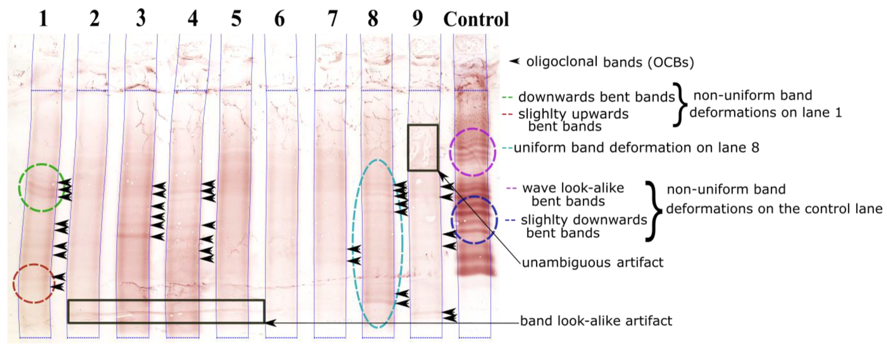

PÁGINA 4 · BIFURCAÇÃO + ATUALIZAÇÃO DE MARCADOR
Manutenção e o liquor: baixa × alta · kappa
Interferon de um lado, natalizumab / cladribina / alemtuzumab do outro — a chave não é “a droga da moda”, é a atividade da EM. E no liquor, kappa entra como primo das bandas.
Bifurcação de manutenção por atividade da EM e par liquórico BOC/kappa.
Como ler a bifurcação
A régua da manutenção não é “potência da droga”, é a atividade da doença. Sequela residual após surto tratado = alta atividade e exige DMD de alta eficácia. O LCR acompanha com BOC IgG e o par kappa — não substitui RM nem reabre McDonald sozinho.

Haddad F et al. · Sensors 2022 · CC BY 4.0 · fonte
O que esta membrana ancora
O padrão clássico das bandas oligoclonais de IgG no LCR (isoeletrofocalização): pistas de amostras + pista controle com multi-banda; setas pretas marcam as bandas. O apoio à disseminação no tempo continua centrado em BOC — o kappa entra como par de significado clínico, não como substituto.
Manutenção = DMD
Na manutenção entram as drogas modificadoras de doença (DMD). A escolha recai a partir da forma clínica / atividade: baixa versus alta.
Baixa atividade
Clássicos: interferon e glatiramer — drogas menos potentes, mais conhecidas e, por isso, em geral mais seguras no discurso de prova.
Alta atividade — “tiro de canhão”
Natalizumab, cladribina, alemtuzumab. Na alta atividade o custo-benefício vale a pancada mais forte: precisa resolver porque a doença ameaça sequela.
Chip de prova de alta atividade
Grande característica clínica no raciocínio de prova: sequela instalada após o surto. Operacionalmente: fez surto → entrou corticoide → melhorou, mas ficou sequela → considerar alta atividade e escalar a manutenção.
Liquor no diagnóstico
O liquor é apoio — reforço à disseminação no tempo (questão temporal), não substituto mágico de toda a RM. Padrão clássico de prova: bandas oligoclonais de IgG.
Atualização de marcador
Cadeias leves kappa no liquor têm o mesmo significado clínico das bandas oligoclonais de IgG. Em prova, o “padrão de liquor da EM” continua centrado nas bandas; as kappa entram como par de significado, não como reabertura de McDonald/RM sozinhas.
Tabela comparativa: baixa × alta atividade
| Eixo | Baixa atividade | Alta atividade |
|---|---|---|
| Perfil clínico | Curso brando, sem falha prévia, sem sequela | Surto grave, sequela residual, alta carga na RM |
| DMDs citadas | Interferon-beta · glatirâmer | Natalizumab · cladribina · alemtuzumab |
| Ganho da escolha | Perfil de segurança, tratamento de manutenção conhecido | Supressão inflamatória profunda (“tiro de canhão”) |
| Chip de prova | “Mais segura” | Sequela residual = alta; escale |
PCDT 2024 — 1ª linha baixa/moderada (completude)
Além de betainterferonas e glatirâmer, o PCDT lista teriflunomida e fumarato de dimetila (e azatioprina restrita). O núcleo clássico de prova permanece interferon/glatiramer; o PCDT completa a lista com teriflunomida e fumarato de dimetila sem apagar esse núcleo.
Escada de alta no PCDT (não “escolha livre”)
natalizumabe (1ª) → cladribina (falha/CI) → alentuzumabe (falha/CI à cladribina). Se o raciocínio for SUS, a ordem importa; se o foco for só “alta = potentes”, o trio de alta eficácia basta no corpo.
Atenção — Kappa × PCDT
Equivalência clínica alinhada a McDonald 2024 (κFLC intercambiável com BOC para síntese intratecal). PCDT SUS 2024 ainda redige bandas oligoclonais — não trate kappa como se já estivesse no algoritmo textual do PCDT.
Quiz
Q1. Paciente com surto de EM recebeu corticoide, melhorou a força, mas ficou com sequela residual. No raciocínio de manutenção:
Gabarito: B. Sequela instalada após surto tratado = chip de alta atividade → manutenção mais potente.
(A) lê “melhorou” e ignora o residual. (C) (D) inventam lógicas fora do núcleo clínico.
Por que cair na A: confundir melhora parcial com baixa atividade.
Quiz
Q2. Sobre cadeias leves kappa no LCR na EM:
Gabarito: B. Kappa = atualização de marcador com mesmo significado clínico das BOC; não reabre sozinho o edifício McDonald/RM.
(A) superdimensiona. (C) confunde com padrão infeccioso. (D) sem base clínica no par BOC/kappa.
Por que cair na A: “marcador novo = revolução diagnóstica completa”.
Quiz
Q3. Trinca de alta atividade em DMD de EM:
Gabarito: B. “tiro de canhão” = natalizumab, cladribina, alemtuzumab.
(A) é núcleo de baixa. (C) surto. (D) placa/MG.
Por que cair na A: inverter colunas do algoritmo.